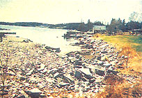
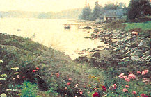

Land Art, however, has come a long way in the last 30 years. Environmentalists, engineers and artists lave begun collaborating to create land art with a purpose. Enter Aviva Rahmani - artist, musician and visionary - who combines many disciplines in a potent ecoacademic-activist cocktail. To see her work, travel along the southeast coast of Maine to Roberts Harbor. Take the ferry to Vinal-haven island and walk east until you find Rahmani's answer to Spiral Jetty 2.5 acres of mother nature called Ghost Nets.
Drawing on 1970s conceptualist art and grassroots activism, Rahmani has created a novel and profound work of art: taking the derelict town dump and returning it to its natural state, with as little human intervention as possible. (The name Ghost Nets is a reference to the transparent monofilament gill nets used by Maine fishermen, which, when lost overboard float through the oceans, trapping fish and strip-mining the sea.) Rahmani spent ten years on the island, physically nurturing the site, documenting its progress in photographs and journals, and living on the land as an act of literal and symbolic reclamation. Her project stands as a decade-long performance piece testifying to an individual's power to effect change. During those ten years Rahmani devoted herself to the community, working with local fishermen and singing in the church choir. Along the way, she created a program for environmental art at the College of the Atlantic, presented ideas to the Harvard Graduate School of Design and collaborated with William Hubbard, chief of the Environmental Resources Branch of the Army Corps of Engineers.
While Rahmani conceives of her work in terms of an action art intended to galvanize the community, her efforts are firmly rooted in science. As part of Ghost Nets, and with the help of experts like Wendy Goldsmith, chief bioengineer with The Bioengineering Group of Salem, Massachusetts, Rahmani has created a class-A migratory-bird fly zone, restored a salt marsh to health and established an environmental "keystone link" joining a total of 70 acres of land. But her long-term goal is far more imaginative: bringing land art to the city by creating animal migration lanes across the heart of North America. Now that would be an environ-arts revolution.
-BenWilcott
|
 From town dump (above, left) to a work of art. |
 |
|